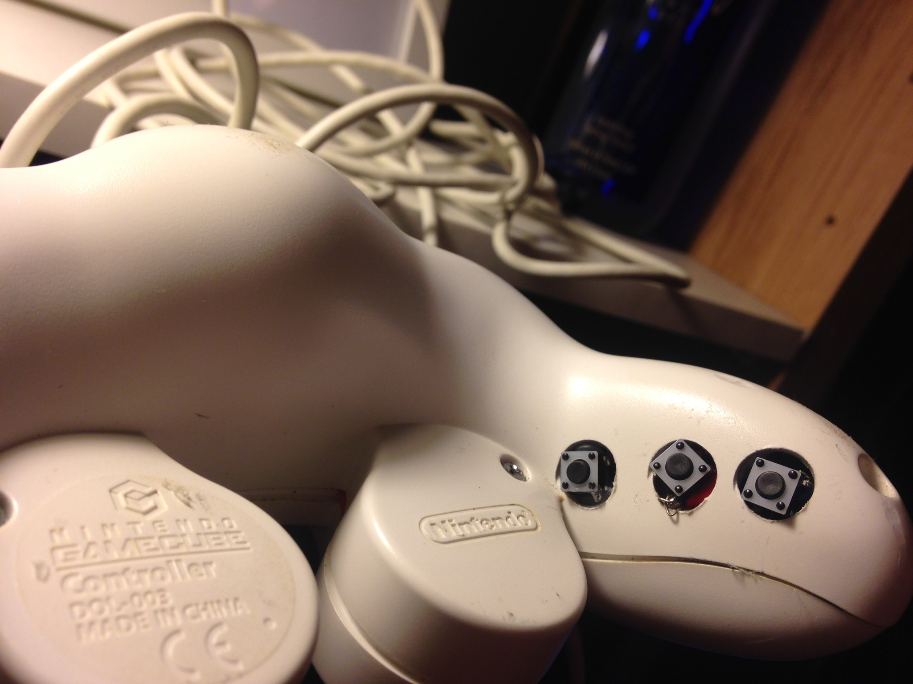

Gamecube Controllers vs Smashbox
Table of Contents
Gamecube Controllers, The Smash Box, and Digital -> Analog Conversion
This is a continuation of the video I put out recently called "Gamecube Controllers in the Era of Smash Box"
Most of the inspiration for this video came from my own frustrations in the greater community discussion of the Smash Box. I felt that a lot of the discussion about the potential legality of Smash Box didn't seem to have a strong enough grasp of the actual changes such a controller would bring to the metagame. Others, such as Gravy, I felt were pushing for the controller mostly because they really want to use it, rather than thinking that it offers no unfair advantage over Gamecube controller users and should be legal.
And to some extent, I really get that. I want to do consistent pivot uptilt combos too, after all.
But I felt the need to make this controller largely to make sure people really understood what they were signing up for.
So, I created this controller with six additional buttons mapping analog values to tactile switches in order to basically trivialize certain difficult analog movements (specifically, pivot uptilt, pivot dtilt, non-tilt shield drop, backdash, asdi down/cc). The six values I chose were in my view the most useful inputs that would not be better suited for controller notches (e.g. firefox angles), but in practice the possibilities are endless; you can have buttons for Ice Climbers solo jump, sheik upb turnaround, Fox optimal ledgedash angles, slight DI for marth/sheik throws, pivot ftilt buttons that are usable for wobbling… Pretty much any hard single analog input can just be mapped to a button. For this project, though, I tried to limit my button choices to buttons that have equivalents on the Smash Box (upwards and downwards tilt modifier, c stick down, left, right, down) but placed in convenient locations.
Rough Tutorial
Disclaimer: I got almost all of the following information from asking Kadano, and if he ever writes a tutorial on this I will link it here. He's super awesome and you should follow him on twitter if you don't already. Worth noting is that he is in favor of Analog-Digital conversion buttons, so if you want a different perspective from mine, from someone who definitely knows their stuff, check his out.
You'll need the following:
- Soldering Equipment
- Wire
- Tact Switches
- Resistors
- Some method of creating holes in the shell (Drill, Dremel, etc)
- Breadboard (semi-optional)
When looking at the pcb from the back, you'll notice there are three pins to the Potentiometer for each axis of an analog stick. The leftmost pin (from the back, so the one corresponding to right) is wired to 3.4v, the left is wired to ground (0V), and the middle is the signal pin which sends a variable voltage to the IC based on what direction it's tilted towards - more to the right, more towards 3.4V; more to the left, more towards 0V; perfectly in the middle, around 1.7V.
The coordinate values are evenly distributed across the voltage values, so the coordinate that gets sent is basically just (V - 1.7) / 1.7. If you want y = 0.675, you'll want 2.8475V (I haven't verified this since I don't have a multimeter, but it's what I've been told). To get this, you can try different amounts of resistance by testing it with a breadboard. Kadano has determined through trial and error that you can use 10 ohm resistors for full values, 5kohm resistors for shield drop values, and trimpots for calibration over time from value degradation (YMMV on the exact values). If someone can build a circuit that is able to change voltage arbitrarily feel free to let me know and I'll drop it in here.
The specific wiring that I used was as follows
I also included Y = -1 and C-stick Y = -1 which are the same as X = -1 but on the other Potentiometer (obviously)
What I did at this step, after completing the wiring and testing that the values were correct, was I drilled a few holes where I wanted the buttons to be on the shell of the controller.
Then I mounted the buttons with hot glue

Not the most elegant solution, but a functional one for a prototype. Results follow:

Some Responses
"It's better for your hands! And your controller is even WORSE for your hands than a normal GCC!"
This is very, very true, but I think all of my criticism sort of becomes moot when you change the fightstick to have, well, a stick. I'm not so conservative that I'd be unwilling to consider alternative controllers (especially with the potential to be better for your hands), but when they have potentially gamebreaking functionalities then we start having issues. A "more normal-looking" fightstick with a fully analog joystick would be way more appealing to FGC players interested in Melee, way more appropriate for the game, way less controversial, and also pretty good for your hands. You can even add notches! Go nuts.
Perhaps not the most rigorous test, but I'm pretty sure most fightsticks have joysticks
In closing
I am not firmly against Smash Box, since Smash Box being legal will allow me to use a controller that trivializes a lot of difficult techniques. I am a player that enjoys tech skill, and I am a player that would be given even more tools with the legality of analog-digital conversion buttons. I believe that the biggest consequence for Smash Box legality isn't actually encountering SmashBox users (I seriously doubt more than a handful of players will become serious tournament threats using this, although I am prepared to be proven wrong), but rather encountering gcc modders (such as myself!) that also have access to tools people haven't been able to learn in 15 years of playing this game.
People discussing the legality of this controller really need to grasp how big of a deal this decision is; legalizing this controller and allowing buttons mapped to analog values will change the metagame in many ways that we can easily grasp, and likely in many ways we haven't even thought of yet. I know TOs like Jesse Hertz of Nebulous are not only approving of this concept, but rather excited by the idea, and have already stated publicly that controllers such as mine will be allowed in their events. My only hope is that the people writing the rulesets for nationals will take into account the enormous change this will bring to the game before they make their decisions, and either way I'll be waiting with the best possible controller that is legal under their ruleset.
posted on 12/22/16